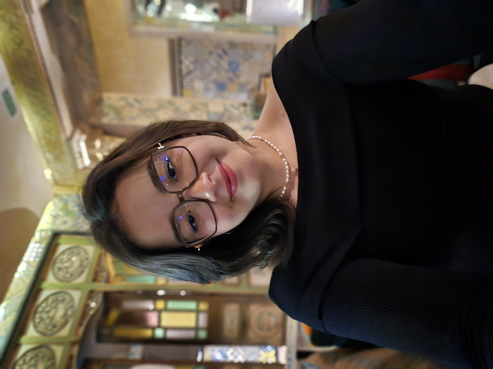

About Me:
Hello! My name is Islem Zayen, and I am a computer science student passionate about web development and artificial intelligence.
I am currently pursuing a Bachelor's degree in Computer Science at IIT. My goal is to use technology to solve real-world problems and create innovative solutions.
In my free time, I enjoy coding, participating in hackathons, and exploring new technologies. Feel free to connect with me on LinkedIn or explore my projects on GitHub.